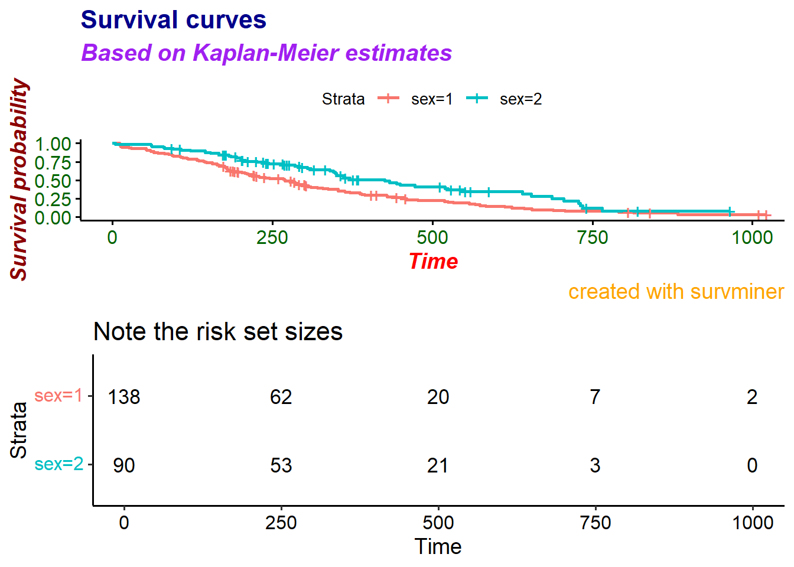
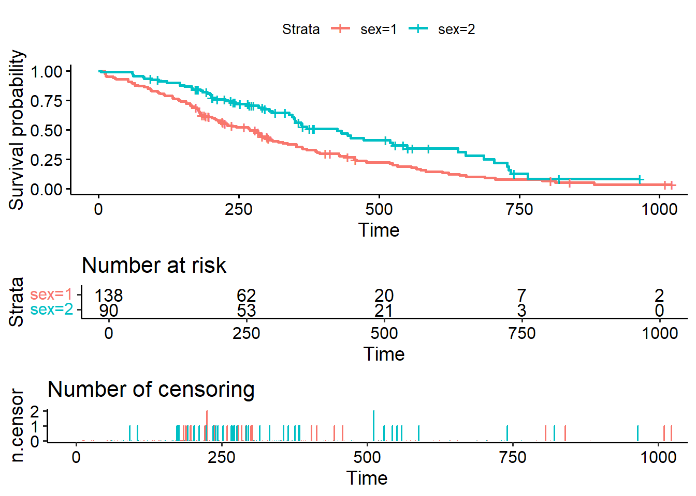
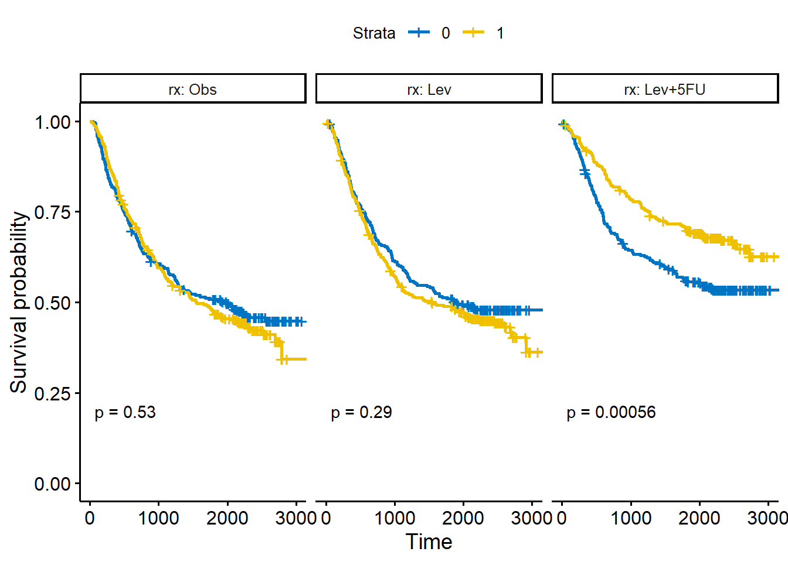
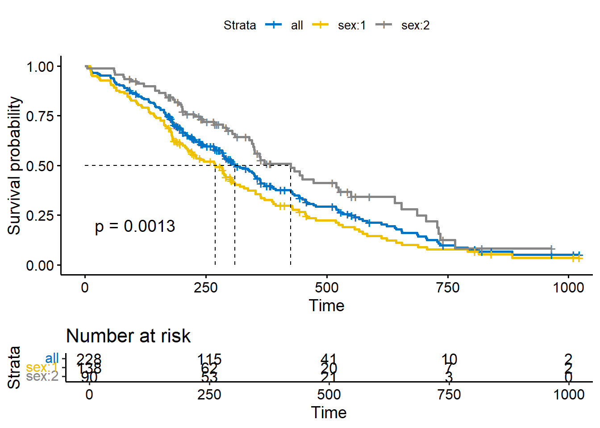

library(survival)
library(survminer)
str(lung)
## 'data.frame': 228 obs. of 10 variables:
## $ inst : num 3 3 3 5 1 12 7 11 1 7 ...
## $ time : num 306 455 1010 210 883 ...
## $ status : num 2 2 1 2 2 1 2 2 2 2 ...
## $ age : num 74 68 56 57 60 74 68 71 53 61 ...
## $ sex : num 1 1 1 1 1 1 2 2 1 1 ...
## $ ph.ecog : num 1 0 0 1 0 1 2 2 1 2 ...
## $ ph.karno : num 90 90 90 90 100 50 70 60 70 70 ...
## $ pat.karno: num 100 90 90 60 90 80 60 80 80 70 ...
## $ meal.cal : num 1175 1225 NA 1150 NA ...
## $ wt.loss : num NA 15 15 11 0 0 10 1 16 34 ...
fit <- survfit(Surv(time, status) ~ sex, data = lung)26 生存曲线可视化
survminer是专门用来进行生存分析可视化的R包，主要函数如下：
- 生存曲线
ggsurvplot():arrange_ggsurvplots():ggsurvevents():surv_summary():surv_cutpoint():pairwise_survdiff():
- Cox模型的诊断
ggcoxzph():ggcoxdiagnostics():ggcoxfunctional():
- Cox模型总汇总
ggforest():ggcoxadjustedcurves():
- 竞争风险模型
ggcompetingrisks():
关于Cox模型诊断和汇总在之前的推文中已经进行过详细的讲解。本次主要介绍生存曲线的绘制及细节。
26.1 演示数据
使用survival包中的lung数据集用于演示，这是一份关于肺癌患者的生存数据。time是生存时间，以天为单位，status是生存状态，1代表删失，2代表死亡。
26.2 基本的生存曲线
最基本的生存曲线：
ggsurvplot(fit, data = lung)删失数据的形状可以更改，默认是+，我们可以改成自己喜欢的：
# 更改删失数据的形状、大小
ggsurvplot(fit, data = lung, censor.shape="|", censor.size = 4)字体都是可以进行更改的！
ggsurvplot(fit, data = lung,
surv.median.line = "hv", # 中位生存时间
title = "Survival curves",
subtitle = "Based on Kaplan-Meier estimates",
caption = "created with survminer",
font.title = c(16, "bold", "darkblue"), # 大小、粗细、颜色
font.subtitle = c(15, "bold.italic", "purple"),
font.caption = c(14, "plain", "orange"),
font.x = c(14, "bold.italic", "red"),
font.y = c(14, "bold.italic", "darkred"),
font.tickslab = c(12, "plain", "darkgreen"))
## Warning in geom_segment(aes(x = 0, y = max(y2), xend = max(x1), yend = max(y2)), : All aesthetics have length 1, but the data has 2 rows.
## ℹ Please consider using `annotate()` or provide this layer with data containing
## a single row.
## All aesthetics have length 1, but the data has 2 rows.
## ℹ Please consider using `annotate()` or provide this layer with data containing
## a single row.累积风险曲线：
ggsurvplot(fit,
fun = "cumhaz",
conf.int = TRUE, # 可信区间
palette = "lancet", # 支持ggsci配色，自定义颜色，brewer palettes中的配色，等
ggtheme = theme_bw() # 支持ggplot2及其扩展包的主题
)
累积事件曲线：
ggsurvplot(fit,
fun = "event",
conf.int = TRUE, # 可信区间
palette = "grey",
ggtheme = theme_pubclean()
)26.3 增加 risk table
增加多种自定义选项：
ggsurvplot(
fit,
data = lung,
size = 1, # 更改线条粗细
# 配色方案，支持ggsci配色，自定义颜色，brewer palettes中的配色，等
palette = "lancet",
conf.int = TRUE, # 可信区间
pval = TRUE, # log-rank P值，也可以提供一个数值
#计算P值的方法，
pval.method = TRUE,
log.rank.weights = "1",
risk.table = TRUE, # 增加risk table
risk.table.col = "strata",# risk table根据分组使用不同颜色
legend.labs = c("Male", "Female"), # 图例标签
risk.table.height = 0.25, # risk table高度
ggtheme = theme_classic2() # 主题，支持ggplot2及其扩展包的主题
)计算P值的方法，可参考https://rpkgs.datanovia.com/survminer/articles/Specifiying_weights_in_log-rank_comparisons.html
ggsurvplot(
fit,
data = lung,
risk.table = TRUE,
pval = TRUE,
conf.int = TRUE,
xlim = c(0,500), # 横坐标轴范围，相当于局部放大
xlab = "Time in days", # 横坐标标题
break.time.by = 100, # 横坐标刻度
ggtheme = theme_light(),
risk.table.y.text.col = T, # risk table文字注释颜色
risk.table.y.text = FALSE # risk table显示条形而不是文字
)
risk table的各种字体也都是可以更改的！
ggsurvplot(fit, data = lung,
title = "Survival curves", subtitle = "Based on Kaplan-Meier estimates",
caption = "created with survminer",
font.title = c(16, "bold", "darkblue"),
font.subtitle = c(15, "bold.italic", "purple"),
font.caption = c(14, "plain", "orange"),
font.x = c(14, "bold.italic", "red"),
font.y = c(14, "bold.italic", "darkred"),
font.tickslab = c(12, "plain", "darkgreen"),
########## risk table #########,
risk.table = TRUE,
risk.table.title = "Note the risk set sizes",
risk.table.subtitle = "and remember about censoring.",
risk.table.caption = "source code: website.com",
risk.table.height = 0.45)
26.4 增加删失时间表ncensor plot
ggsurvplot(fit, data = lung, risk.table = TRUE, ncensor.plot = TRUE)
ncensor plot的字体也是支持各种设置的。
ggsurvplot(fit, data = lung,
title = "Survival curves", subtitle = "Based on Kaplan-Meier estimates",
caption = "created with survminer",
font.title = c(16, "bold", "darkblue"),
font.subtitle = c(15, "bold.italic", "purple"),
font.caption = c(14, "plain", "orange"),
font.x = c(14, "bold.italic", "red"),
font.y = c(14, "bold.italic", "darkred"),
font.tickslab = c(12, "plain", "darkgreen"),
########## risk table #########,
risk.table = TRUE,
risk.table.title = "Note the risk set sizes",
risk.table.subtitle = "and remember about censoring.",
risk.table.caption = "source code: website.com",
risk.table.height = 0.2,
## ncensor plot ##
ncensor.plot = TRUE,
ncensor.plot.title = "Number of censorings",
ncensor.plot.subtitle = "over the time.",
ncensor.plot.caption = "data available at data.com",
ncensor.plot.height = 0.25)26.5 超级无敌精细化自定设置
首先设置好自己的默认样式：
ggsurv <- ggsurvplot(
fit,
data = lung,
risk.table = TRUE,
pval = TRUE,
conf.int = TRUE,
palette = c("#E7B800", "#2E9FDF"),
xlim = c(0,500),
xlab = "Time in days",
break.time.by = 100,
ggtheme = theme_light(),
risk.table.y.text.col = T,
risk.table.height = 0.25,
risk.table.y.text = FALSE,
ncensor.plot = TRUE,
ncensor.plot.height = 0.25,
conf.int.style = "step", # customize style of confidence intervals
surv.median.line = "hv",
legend.labs = c("Male", "Female")
)
## Warning in geom_segment(aes(x = 0, y = max(y2), xend = max(x1), yend = max(y2)), : All aesthetics have length 1, but the data has 2 rows.
## ℹ Please consider using `annotate()` or provide this layer with data containing
## a single row.
ggsurv
## Warning in geom_segment(aes(x = 0, y = max(y2), xend = max(x1), yend = max(y2)), : All aesthetics have length 1, but the data has 2 rows.
## ℹ Please consider using `annotate()` or provide this layer with data containing
## a single row.
## All aesthetics have length 1, but the data has 2 rows.
## ℹ Please consider using `annotate()` or provide this layer with data containing
## a single row.
## All aesthetics have length 1, but the data has 2 rows.
## ℹ Please consider using `annotate()` or provide this layer with data containing
## a single row.自定义一个函数，用来更改各种样式：
customize_labels <- function (p, font.title = NULL,
font.subtitle = NULL, font.caption = NULL,
font.x = NULL, font.y = NULL, font.xtickslab = NULL, font.ytickslab = NULL)
{
original.p <- p
if(is.ggplot(original.p)) list.plots <- list(original.p)
else if(is.list(original.p)) list.plots <- original.p
else stop("Can't handle an object of class ", class (original.p))
.set_font <- function(font){
font <- ggpubr:::.parse_font(font)
ggtext::element_markdown (size = font$size, face = font$face, colour = font$color)
}
for(i in 1:length(list.plots)){
p <- list.plots[[i]]
if(is.ggplot(p)){
if (!is.null(font.title)) p <- p + theme(plot.title = .set_font(font.title))
if (!is.null(font.subtitle)) p <- p + theme(plot.subtitle = .set_font(font.subtitle))
if (!is.null(font.caption)) p <- p + theme(plot.caption = .set_font(font.caption))
if (!is.null(font.x)) p <- p + theme(axis.title.x = .set_font(font.x))
if (!is.null(font.y)) p <- p + theme(axis.title.y = .set_font(font.y))
if (!is.null(font.xtickslab)) p <- p + theme(axis.text.x = .set_font(font.xtickslab))
if (!is.null(font.ytickslab)) p <- p + theme(axis.text.y = .set_font(font.ytickslab))
list.plots[[i]] <- p
}
}
if(is.ggplot(original.p)) list.plots[[1]]
else list.plots
}然后分别对上面图形的3个部分（生存曲线、risk table、ncensor plot）进行个性化自定义
# 更改生存曲线的标签
ggsurv$plot <- ggsurv$plot + labs(
title = "Survival curves",
subtitle = "Based on Kaplan-Meier estimates",
caption = "created with survminer"
)
# 更改risk table的标签
ggsurv$table <- ggsurv$table + labs(
title = "Note the risk set sizes",
subtitle = "and remember about censoring.",
caption = "source code: website.com"
)
# 更改ncensor plot的标签
ggsurv$ncensor.plot <- ggsurv$ncensor.plot + labs(
title = "Number of censorings",
subtitle = "over the time.",
caption = "source code: website.com"
)
# 更改生存曲线，risk table，ncensor plot的字体大小、类型、颜色
ggsurv <- customize_labels(
ggsurv,
font.title = c(16, "bold", "darkblue"),
font.subtitle = c(15, "bold.italic", "purple"),
font.caption = c(14, "plain", "orange"),
font.x = c(14, "bold.italic", "red"),
font.y = c(14, "bold.italic", "darkred"),
font.xtickslab = c(12, "plain", "darkgreen")
)
## Warning: `is.ggplot()` was deprecated in ggplot2 3.5.2.
## ℹ Please use `is_ggplot()` instead.
ggsurv
## Warning in geom_segment(aes(x = 0, y = max(y2), xend = max(x1), yend = max(y2)), : All aesthetics have length 1, but the data has 2 rows.
## ℹ Please consider using `annotate()` or provide this layer with data containing
## a single row.
## Warning in geom_segment(aes(x = 0, y = max(y2), xend = max(x1), yend = max(y2)), : All aesthetics have length 1, but the data has 2 rows.
## ℹ Please consider using `annotate()` or provide this layer with data containing
## a single row.
## All aesthetics have length 1, but the data has 2 rows.
## ℹ Please consider using `annotate()` or provide this layer with data containing
## a single row.26.6 多个组的生存曲线
如果你的分类变量是多个组别的（常见的都是两组比较的），会自动画出多条生存曲线。如果你有多个分类自变量，会自动画出所有组合的生存曲线。
使用colon数据集，其中time是时间，status是生存状态，1为发生终点事件，0为删失，rx是治疗方式，有三种：observation、Levamisole、Levamisole+5-FU，obstruct是肿瘤是否阻塞结肠，有为1，无为0，adhere是肿瘤是否粘附附近器官，有为1，无为0。
rm(list = ls())
library(survival)
library(survminer)
psych::headTail(colon)
## id study rx sex age obstruct perfor adhere nodes status differ
## 1 1 1 Lev+5FU 1 43 0 0 0 5 1 2
## 2 1 1 Lev+5FU 1 43 0 0 0 5 1 2
## 3 2 1 Lev+5FU 1 63 0 0 0 1 0 2
## 4 2 1 Lev+5FU 1 63 0 0 0 1 0 2
## ... ... ... <NA> ... ... ... ... ... ... ... ...
## 1855 928 1 Lev+5FU 0 48 1 0 0 4 0 2
## 1856 928 1 Lev+5FU 0 48 1 0 0 4 0 2
## 1857 929 1 Lev 0 66 1 0 0 1 0 2
## 1858 929 1 Lev 0 66 1 0 0 1 0 2
## extent surg node4 time etype
## 1 3 0 1 1521 2
## 2 3 0 1 968 1
## 3 3 0 0 3087 2
## 4 3 0 0 3087 1
## ... ... ... ... ... ...
## 1855 3 1 1 2072 2
## 1856 3 1 1 2072 1
## 1857 3 0 0 1820 2
## 1858 3 0 0 1820 1
# 两个分类变量
fit2 <- survfit( Surv(time, status) ~ rx + obstruct, data = colon )
# 结果会给出所有组合的生存曲线
ggsurvplot(fit2, pval = TRUE,
risk.table = TRUE,
risk.table.height = 0.3
) 26.7 多个分类变量分面绘制
还是以colon数据集为例，这次我们用3个变量：sex/rx/adhere，这3个都是分类变量。
首先构建生存函数：
fit3 <- survfit(Surv(time, status) ~ sex + rx + adhere, data = colon )然后把生存曲线保存为一个对象：
ggsurv <- ggsurvplot(fit3, data = colon,
fun = "cumhaz", conf.int = TRUE,
risk.table = TRUE, risk.table.col="strata",
ggtheme = theme_bw())接下来就可以分别提取生存曲线（这里是cumhaz，累积风险曲线）、risk table、删失事件表，根据不同的变量进行分面即可：
# 分面累积风险曲线
curv_facet <- ggsurv$plot + facet_grid(rx ~ adhere)
curv_facet# 分面risk table，和上面的累积风险曲线分面方法一样
ggsurv$table + facet_grid(rx ~ adhere, scales = "free")+
theme(legend.position = "none")
# risk table另一种分面方法，由于有3个分类变量，可以选择自己需要的分面方法
tbl_facet <- ggsurv$table + facet_grid(.~ adhere, scales = "free")
tbl_facet + theme(legend.position = "none")
# 重新安排下布局，把生存曲线和risk table画在一起
g2 <- ggplotGrob(curv_facet)
g3 <- ggplotGrob(tbl_facet)
min_ncol <- min(ncol(g2), ncol(g3))
g <- gridExtra::gtable_rbind(g2[, 1:min_ncol], g3[, 1:min_ncol], size="last")
g$widths <- grid::unit.pmax(g2$widths, g3$widths)
grid::grid.newpage()
grid::grid.draw(g)如果想根据某个变量进行分组绘制生存曲线，然后分面展示，也可以用ggsurvplot_facet()实现：
fit <- survfit( Surv(time, status) ~ sex, data = colon )
# 根据rx进行分组，展示每个组内的生存曲线
ggsurvplot_facet(fit, colon,
facet.by = "rx",
palette = "jco",
pval = TRUE)
还可以根据多个变量进行分面展示：
ggsurvplot_facet(fit, colon, facet.by = c("rx", "adhere"),
palette = "jco", pval = TRUE)fit2 <- survfit( Surv(time, status) ~ sex + rx, data = colon )
ggsurvplot_facet(fit2, colon, facet.by = "adhere",
palette = "jco", pval = TRUE)26.8 同时绘制多个生存函数
data(colon)
## Warning in data(colon): data set 'colon' not found
f1 <- survfit(Surv(time, status) ~ adhere, data = colon)
f2 <- survfit(Surv(time, status) ~ rx, data = colon)
fits <- list(sex = f1, rx = f2)
# 一下子画好！在循环出图时有用处
legend.title <- list("sex", "rx")
ggsurvplot_list(fits, colon, legend.title = legend.title)
## $sex##
## $rx##
## attr(,"class")
## [1] "list" "ggsurvplot_list"26.9 根据某一个变量分组绘制
比如以colon数据为例，我们想以rx（治疗方式）进行分组，然后看每个组内的生存曲线，可以通过ggsurvplot_group_by()实现。
rm(list = ls())
fit <- survfit( Surv(time, status) ~ sex, data = colon )
# Visualize: grouped by treatment rx
#:::::::::::::::::::::::::::::::::::::::::::::::::::::::::::::::::
ggsurv.list <- ggsurvplot_group_by(fit, colon, group.by = "rx", risk.table = TRUE,
pval = TRUE, conf.int = TRUE, palette = "jco")
names(ggsurv.list)
## [1] "rx.Obs::sex" "rx.Lev::sex" "rx.Lev+5FU::sex"这个图形和上面的分面展示中的ggsurvplot_facet画出来的图形是一样的，区别就是一个是分面，这个是分开多个图形！
可以根据多个变量进行分组，比如下面这个情况，会分别绘制6张生存曲线图：
# Visualize: grouped by treatment rx and adhere
ggsurv.list <- ggsurvplot_group_by(fit, colon, group.by = c("rx", "adhere"),
risk.table = TRUE,
pval = TRUE, conf.int = TRUE, palette = "jco")
# 6张图的名字，图没有画出来，感兴趣的可以自己试试看
names(ggsurv.list)
## [1] "rx:Obs, adhere:0::sex" "rx:Obs, adhere:1::sex"
## [3] "rx:Lev, adhere:0::sex" "rx:Lev, adhere:1::sex"
## [5] "rx:Lev+5FU, adhere:0::sex" "rx:Lev+5FU, adhere:1::sex"26.10 在原有生存曲线的基础上增加
先画好一个生存曲线图，然后在原图的基础上添加新的生存曲线图，类似于base r中常用的add = T，比如在这篇推文中介绍的：多个时间点和多指标生存曲线
library(survival)
# 注意这里的surv_fit，是survfit的封装
fit <- surv_fit(Surv(time, status) ~ sex, data = lung)
# Visualize survival curves
ggsurvplot(fit, data = lung,
risk.table = TRUE, pval = TRUE,
surv.median.line = "hv", palette = "jco")
## Warning in geom_segment(aes(x = 0, y = max(y2), xend = max(x1), yend = max(y2)), : All aesthetics have length 1, but the data has 2 rows.
## ℹ Please consider using `annotate()` or provide this layer with data containing
## a single row.
## All aesthetics have length 1, but the data has 2 rows.
## ℹ Please consider using `annotate()` or provide this layer with data containing
## a single row.
## All aesthetics have length 1, but the data has 2 rows.
## ℹ Please consider using `annotate()` or provide this layer with data containing
## a single row.
## All aesthetics have length 1, but the data has 2 rows.
## ℹ Please consider using `annotate()` or provide this layer with data containing
## a single row.
在上面图形的基础上添加所有人的总的生存曲线：
# Add survival curves of pooled patients (Null model)
# Use add.all = TRUE option
ggsurvplot(fit, data = lung,
risk.table = TRUE, pval = TRUE,
surv.median.line = "hv", palette = "jco",
add.all = TRUE)
## Warning in geom_segment(aes(x = 0, y = max(y2), xend = max(x1), yend = max(y2)), : All aesthetics have length 1, but the data has 3 rows.
## ℹ Please consider using `annotate()` or provide this layer with data containing
## a single row.
## All aesthetics have length 1, but the data has 3 rows.
## ℹ Please consider using `annotate()` or provide this layer with data containing
## a single row.
## All aesthetics have length 1, but the data has 3 rows.
## ℹ Please consider using `annotate()` or provide this layer with data containing
## a single row.
## All aesthetics have length 1, but the data has 3 rows.
## ℹ Please consider using `annotate()` or provide this layer with data containing
## a single row.
26.11 多个生存函数画在一起
比如把PFS和OS的生存曲线画在一张图上。
rm(list = ls())
# 构建一个示例数据集
set.seed(123)
demo.data <- data.frame(
os.time = colon$time,
os.status = colon$status,
pfs.time = sample(colon$time),
pfs.status = colon$status,
sex = colon$sex, rx = colon$rx, adhere = colon$adhere
)
# 总体的PFS和OS生存曲线
pfs <- survfit( Surv(pfs.time, pfs.status) ~ 1, data = demo.data)
os <- survfit( Surv(os.time, os.status) ~ 1, data = demo.data)
# Combine on the same plot
fit <- list(PFS = pfs, OS = os)
ggsurvplot_combine(fit, demo.data)这个情况你用ggsurvplot_list也能画，不过就是分开的两个图形了！
如果是分类变量会自动画出多条生存曲线：
pfs <- survfit( Surv(pfs.time, pfs.status) ~ rx, data = demo.data)
os <- survfit( Surv(os.time, os.status) ~ rx, data = demo.data)
# Combine on the same plot
fit <- list(PFS = pfs, OS = os)
ggsurvplot_combine(fit, demo.data)26.12 参考资料
- survminer包帮助文档